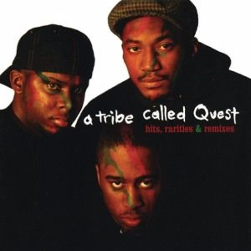

Homepagina
Biografie
A Tribe Called Quest was an American hip hop group formed in St. Albans, Queens, New York, in 1985,[4][5][2] originally composed of rapper and main producer Q-Tip,[6] rapper Phife Dawg, DJ and co-producer Ali Shaheed Muhammad, and rapper Jarobi White. Members of the Native Tongues collective, the group is regarded as a pioneer of alternative hip hop, influencing numerous hip hop and R&B musicians.
A Tribe Called Quest
- 1985 - 2017
- Q Tip, Phife Dawg, Ali Shaheed Muhammad, Jarobi White
- A Tribe Called Quest Site